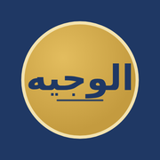

الوجيه في الإشراف التربويالموقع يبحث عن حلول يتجاوز فيها أي إجراء تقني
سنكمل مشروعنا معا في طريق النجاح وسنفرض حضورنا بوعيً.
المهم في المشكلة ليس حلها، ولكن القوة التي نكتسبها في إيجاد الحل — سينيكا .

الوجيه في الإشراف التربويسنكمل مشروعنا معا في طريق النجاح وسنفرض حضورنا بوعيً.